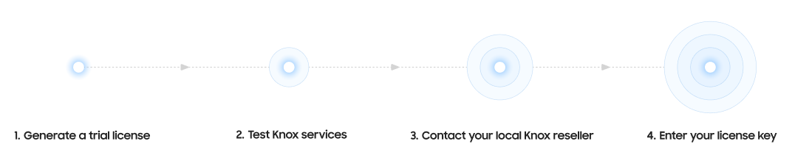

Knox licenses
Last updated January 15th, 2025
Samsung offers a variety of Knox licenses to support your device management needs. If you’re new to Knox services, check out the recommended licensing workflow and About Knox licenses to help you find the license that works best for your enterprise.
This page also provides answers to some of the following licensing questions you might have:
- How to get a Knox license
- About Knox licenses
- Server-based Knox licenses
- Device-based Knox licenses
- Can any Knox services be used for free?
- Which Knox services offer trial licenses?
- How do commercial Knox licenses work?
- Which commercial licenses can I get, and where?
- Where can I manage my existing licenses?
- How can I use more Knox cloud services on my existing license?
How to get a Knox license
You can use a trial Knox license to get started with Knox services, and then procure a commercial license for your entire fleet of devices:

-
Generate a trial license for the service you want to use on the Knox Admin Portal. When you get approved for it, a trial license is automatically added to your account in the Knox Admin Portal.
-
Test the service by enrolling a device. If you have a Knox Suite - Enterprise Plan trial license, you can also try the other Knox cloud services included with the plan.
-
When you’re ready, contact your local Knox reseller to purchase a commercial license. The reseller will share a license key with you.
-
Enter your license key in the Knox Admin Portal to start using Knox services on your full device fleet. Your reseller can also add licenses to your account on your behalf.
About Knox licenses
Knox licenses are used to activate Knox services on a device. Each license is associated with a license key, an alphanumeric string that acts as an identifier and allows devices to use a Knox service.
When you start a trial of a Knox cloud service, you’re given a trial license key. Intended for testing and development purposes, these trial keys are valid for 3 months and support up to 30 devices.
When you’re ready to deploy to your full device fleet, commercial license keys can be purchased from a local reseller, with various expiry dates and license quantities based on what your enterprise needs.
After you purchase a commercial license, your reseller can add it to your account for you, but you can also enter the license key in the Knox Admin Portal.
Knox Suite Plans
If you’re looking for an all-in-one device management experience, consider the Knox Suite Plans that include multiple Knox cloud services.
The following table shows the Knox Suite Plans available for purchase and the Knox services associated with each plan:
| Knox Suite Plan | Supported Knox services |
|---|---|
| Knox Suite - Base Plan | Knox Mobile Enrollment, Knox Platform for Enterprise |
| Knox Suite - Essentials Plan | Knox Mobile Enrollment, Knox Manage, Knox Remote Support, Knox Platform for Enterprise |
| Knox Suite - Enterprise Plan | Knox Mobile Enrollment, Knox Mobile Enrollment (Advanced settings), Knox Manage, Knox E-FOTA, Knox Asset Intelligence, Knox Remote Support, Knox Platform for Enterprise, Knox Capture, Knox Authentication Manager |
Standalone licenses are also available if you only want to use individual services.
- You can get a Knox Suite - Enterprise Plan trial license to test Knox services. For more information, see Generate a free trial license.
- If you’re not sure which license works best for your enterprise yet, you can replace certain standalone licenses with a Knox Suite Plan at any time. The reverse also applies.
- Purchase Knox commercial licenses from your local reseller.
Server-based Knox licenses
The following tables provide information on the available Knox services, including the license keys they support and where to get a trial license if a service offers it.
Server-based licenses include both cloud and on-premises services. To start using these Knox services, enter cloud license keys on the Knox Admin Portal, and enter on-premises license keys directly on the service console.
| Knox service | Pricing | Supported Knox Suite Plans and license keys | Trial license and where to get it | Server type |
|---|---|---|---|---|
| Knox Mobile Enrollment | Free | No license key required | No license key required | Cloud |
| Knox Mobile Enrollment (Advanced settings) | Paid |
Knox Suite - Enterprise Plan |
Knox Suite - Enterprise Plan trial key (Knox Admin Portal) | Cloud |
| Knox Manage | Paid |
Knox Suite - Enterprise Plan Knox Suite - Essentials Plan Knox Manage key |
Knox Suite - Enterprise Plan trial key (Knox Admin Portal) | Cloud |
| Knox E-FOTA | Paid |
Knox Suite - Enterprise Plan Knox E-FOTA key |
Knox Suite - Enterprise Plan trial key (Knox Admin Portal) | Cloud |
| Knox Asset Intelligence | Paid |
Knox Suite - Enterprise Plan Knox Asset Intelligence key |
Knox Suite - Enterprise Plan trial key (Knox Admin Portal) | Cloud |
| Knox Remote Support | Paid |
Knox Suite - Enterprise Plan Knox Suite - Essentials Plan Knox Manage key |
Knox Suite - Enterprise Plan trial key (Knox Admin Portal) | Cloud |
| Knox Configure | Paid | Knox Configure key | Knox Configure trial key (Knox Admin Portal) | Cloud |
| Knox Guard | Paid | Knox Guard key | Knox Guard trial key (Knox Guard console) | Cloud |
| Samsung Care+ for Business | Paid | Samsung Care+ for Business key | No trial available | Cloud |
| Knox Mobile Enrollment Direct | Free | Knox Mobile Enrollment Direct key | Free service, no trial available | On-premises |
| Knox E-FOTA On-Premises | Paid | Knox E-FOTA On-Premises key | Contact your Samsung representative | On-premises |
Device-based Knox licenses
Enroll your devices with a device-based license by registering it through an EMM. Certain services, such as Knox Capture, allow you to enroll individual devices by entering a license key directly in the app.
| Knox service | Pricing | Supported Knox Suite Plans and license keys | Trial license and where to get it |
|---|---|---|---|
| Knox Platform for Enterprise (Knox Service Plugin) | Free |
All Knox Suite Plans Knox Platform for Enterprise Premium key |
No trial available |
| Knox Platform for Enterprise DualDAR (Knox Service Plugin) | Paid | Knox Platform for Enterprise DualDAR key | No trial available |
| Knox Capture | Paid | Knox Suite - Enterprise Plan | Knox Suite - Enterprise Plan trial key (Knox Admin Portal) |
| Knox Authentication Manager | Paid | Knox Suite - Enterprise Plan | Knox Suite - Enterprise Plan trial key (Knox Admin Portal) |
Can any Knox services be used for free?
Some Knox services are free to use, but you may still need to generate a license to use them.
- Knox Mobile Enrollment — No license required.
- Knox Platform for Enterprise (Knox Service Plugin) — Requires a free, device-based Knox Platform for Enterprise Premium license. You can activate this license through your EMM.
- Knox Mobile Enrollment Direct — Requires a free, on-premises Knox Mobile Enrollment Direct license. You can generate one from the Knox Mobile Enrollment Direct download page.
Which Knox services offer trial licenses?
Trial licenses are intended for testing purposes, and support up to 30 devices for 3 months. You can generate trial licenses for the following Knox cloud services on the Knox Admin Portal:
-
Knox Suite - Enterprise Plan trial license, which includes:
- Knox Mobile Enrollment (Advanced settings)
- Knox Manage
- Knox E-FOTA
- Knox Asset Intelligence
- Knox Remote Support
- Knox Capture
- Knox Authentication Manager
For steps on how to generate a Knox Suite - Enterprise Plan trial license key, see Manage Knox licenses.
-
Knox Guard
-
Knox Configure
After your trial ends, your devices and data remain in your account. You can continue using Knox Suite by purchasing a Knox commercial license from your local reseller and replacing your trial license.
How do commercial Knox licenses work?
A commercial Knox license lets you use Knox services across your entire device fleet, and is obtained through your local Knox reseller. If you don’t have a reseller yet, see the Knox reseller directory to find one near you.
When you purchase a license from a reseller:
- You can decide how many seats the license must have, which ideally equates to the number of devices you want to activate concurrently on the service.
- The reseller gives you a license key, which you’ll need to enter on the Knox Admin Portal to register the license.
Once a license is assigned to a device, the service you’re enrolling in consumes a seat on the license. For example, if your reseller provided you with a 200-seat Knox Configure license, you can have a maximum of 200 devices enrolled in Knox Configure.
Each license has an expiry date, after which the license can’t be used with Knox services anymore. The exception to this rule is staggered license keys, which allow you to use the service even after the license expiration date, until the service period ends. To add more seats to your license or renew an existing license, contact your Knox reseller.
Staggered licenses
Some services, like Knox Configure, Knox Guard, and Samsung Care+ for Business, offer staggered licenses, which allows devices to use a service even after the license expires. These licenses have an activation period, which dictates when you can enroll new devices. Once a device is enrolled, its service period starts, which is how long the device can use a service for. The service period typically remains active after the activation period ends and the license expires.
The activation period and service period can differ by service.
However, if you purchase more seats on the license before the activation period ends, you can continue to enroll devices for a year past the new purchase date. Let’s say you purchased 100 seats on a license in January 2023, which means you can enroll 100 devices until January 2024. If you purchase an extra 100 seats in August 2023, you’re now able to enroll all 200 devices with that license until August 2024.
Which commercial licenses can I get, and where?
The following table lists each Knox service, its license type, and the licenses it supports. Each service name is also linked to its respective documentation, where you can get license information specific to that service.
| Knox service | Type | Supported Knox Suite Plans and license keys | Where to get the license |
|---|---|---|---|
| Knox Mobile Enrollment (Advanced settings) | Cloud-based |
Knox Suite - Enterprise Plan |
Purchase from a reseller |
| Knox Manage | Cloud-based |
Knox Suite - Enterprise Plan Knox Suite - Essentials Plan Knox Manage standalone key |
|
| Knox E-FOTA | Cloud-based |
Knox Suite - Enterprise Plan Knox E-FOTA standalone key |
|
| Knox Asset Intelligence | Cloud-based |
Knox Suite - Enterprise Plan Knox Asset Intelligence standalone key |
|
| Knox Remote Support | Cloud-based |
Knox Suite - Enterprise Plan Knox Suite - Essentials Plan Knox Manage standalone key |
|
| Knox Configure | Cloud-based | Knox Configure standalone key | |
| Knox Guard | Cloud-based | Knox Guard standalone key | |
| Samsung Care+ for Business | Cloud-based | Samsung Care+ for Business key | |
| Knox Platform for Enterprise DualDAR (Knox Service Plugin) | Device-based | Knox Platform for Enterprise DualDAR key | |
| Knox Capture | App |
Knox Suite - Enterprise Plan |
|
| Knox Authentication Manager | App |
Knox Suite - Enterprise Plan |
|
| Knox E-FOTA On-Premises | On-premises | Knox E-FOTA On-Premises key |
Where can I manage my existing licenses?
Depending on the service, you can manage your licenses from different locations throughout the Knox Admin Portal, individual services, and your EMM console.
If your Knox Platform for Enterprise license is about to expire within the next 90 days, make sure to renew the license for another two years. Otherwise, your existing devices will be impacted.
The following table outlines where you can find license information for each Knox service.
| Knox service | License menu location |
|---|---|
|
Knox Mobile Enrollment Knox Mobile Enrollment (Advanced settings) Knox Manage Knox E-FOTA Knox Asset Intelligence Knox Remote Support Knox Configure Samsung Care+ for Business Knox Capture Knox Authentication Manager |
Knox Admin Portal licenses menu |
| Knox Manage | Knox Manage license menu |
| Knox Guard | Knox Guard license menu |
| Knox E-FOTA On-Premises | Knox E-FOTA On-Premises license menu |
|
Knox Platform for Enterprise (Knox Service Plugin) Knox Platform for Enterprise Dual DAR (Knox Service Plugin) Knox Mobile Enrollment Direct |
Additional Knox services license menu |
|
Knox Platform for Enterprise (Knox Service Plugin) Knox Platform for Enterprise Dual DAR (Knox Service Plugin) Knox Capture |
EMM console |
Additionally, see Manage Knox licenses to learn how to replace licenses, free up license seats, as well as delete a license.
How can I use more Knox cloud services on my existing license?
If you’d like to use additional Knox cloud services that are currently not supported by your license, you will need to purchase a Knox Suite Plan that covers those services. Contact your reseller and request for a license upgrade.
Currently, you can upgrade the following licenses to the Knox Suite – Enterprise Plan:
- Knox E-FOTA
- Knox Asset Intelligence
- Knox Suite - Essentials Plan
After the upgrade, you can continue using your existing license key as before. However, if you downgrade your license to use fewer services, you can’t continue using your existing license key.
On this page
Is this page helpful?